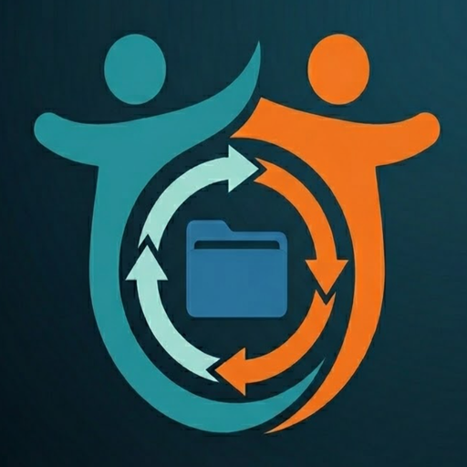

Peer-to-peer folder sync with relay-backed restore. Keep your documents, photos, and other important folders on a trusted buddy machine, then rebuild a lost machine with a 12-word recovery phrase and resync missing files.

Offsite backup with someone you trust, plus a recovery path when a machine is lost.
Fire, flood, theft, and dead disks are easier to survive when a buddy has the other copy.
Set up a 12-word recovery phrase once and restore config on a replacement machine later.
After config recovery, normal sync can recreate files that are missing locally but still exist on your buddy.
A single pairing code identifies the relationship and is reused for relay fallback.
Protect an existing local copy from remote overwrite while still allowing missing files to be recreated.
No accounts, no subscription, and no black box between you and your data.
Install BuddyDrive on both machines.
Generate a pairing code and share it with your buddy.
Select folders to sync and enable recovery if you want a rebuild path.
Recover config with 12 words, then let sync recreate what is missing.
| Cloud Backup | BuddyDrive |
|---|---|
| $5-20/month forever | Free, forever |
| Vendor-managed restore | Your own 12-word recovery phrase |
| Data on company servers | Data with your buddy |
| Account required | No account required |
| Trust the provider | Trust someone you know |
Families, friends, and small teams that want offsite sync, a practical restore path, and fewer subscriptions.